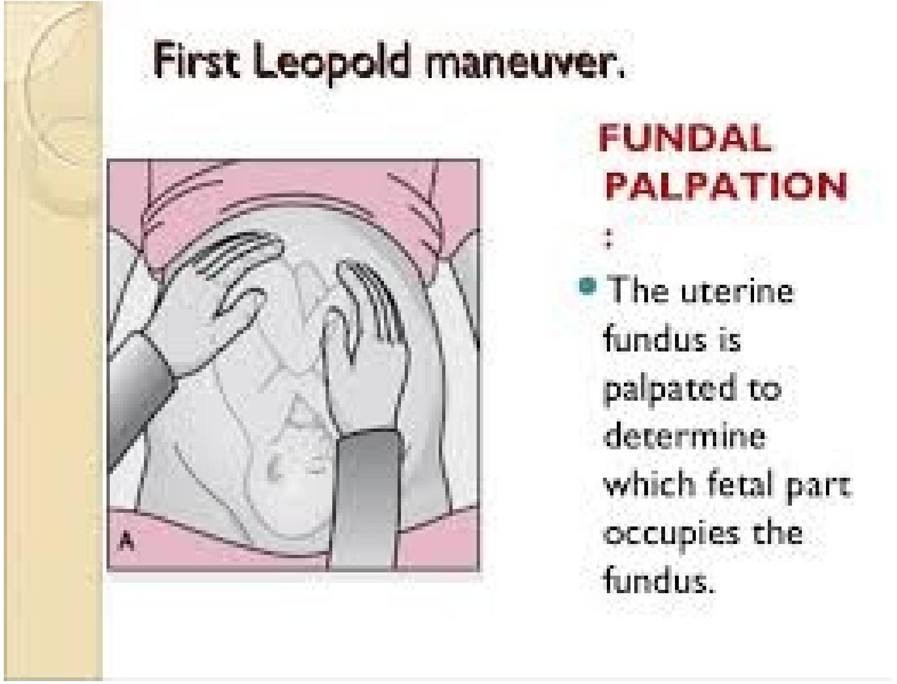
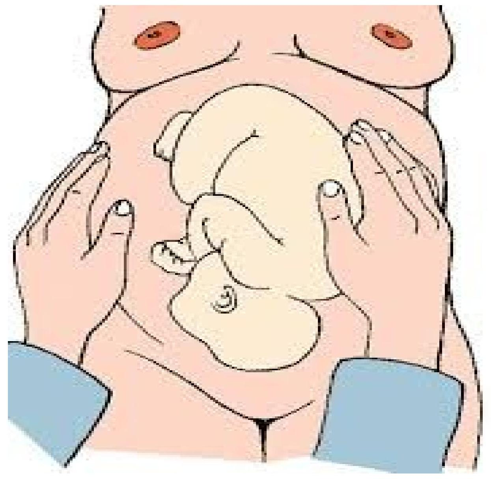
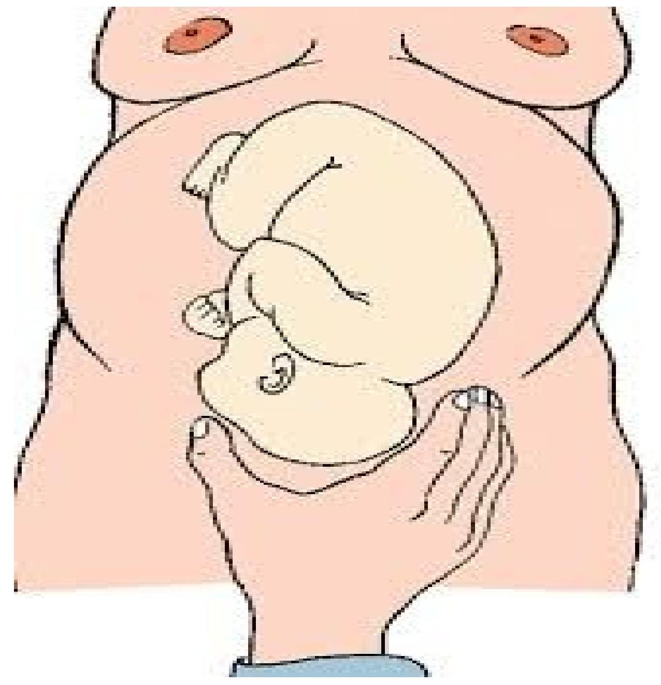
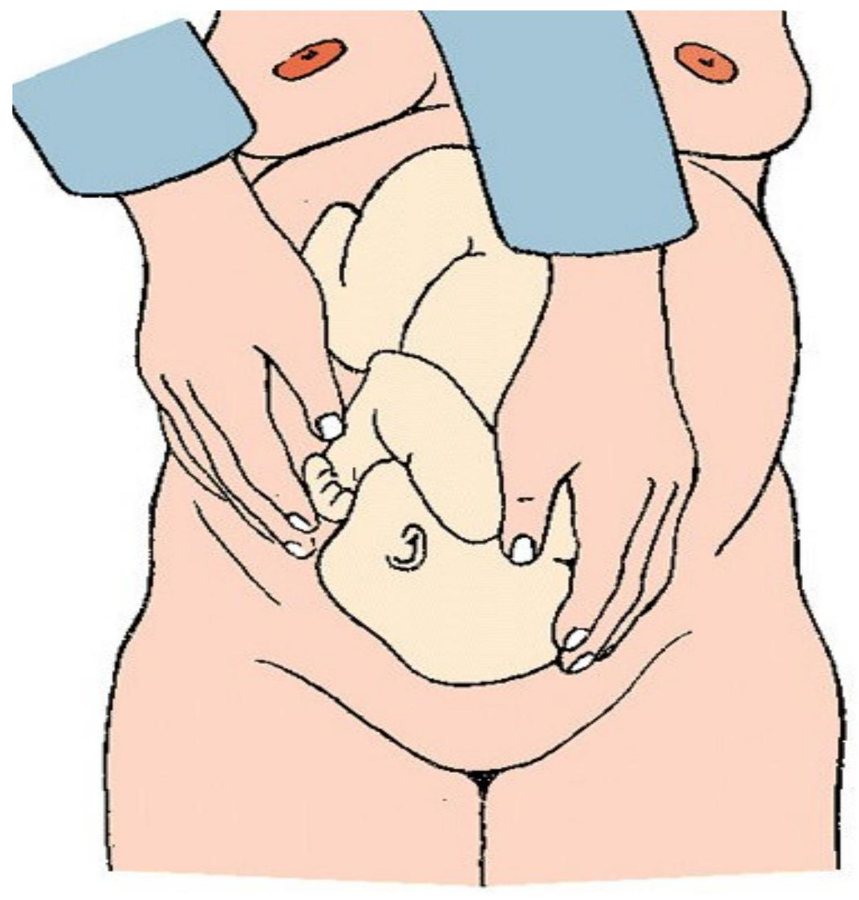
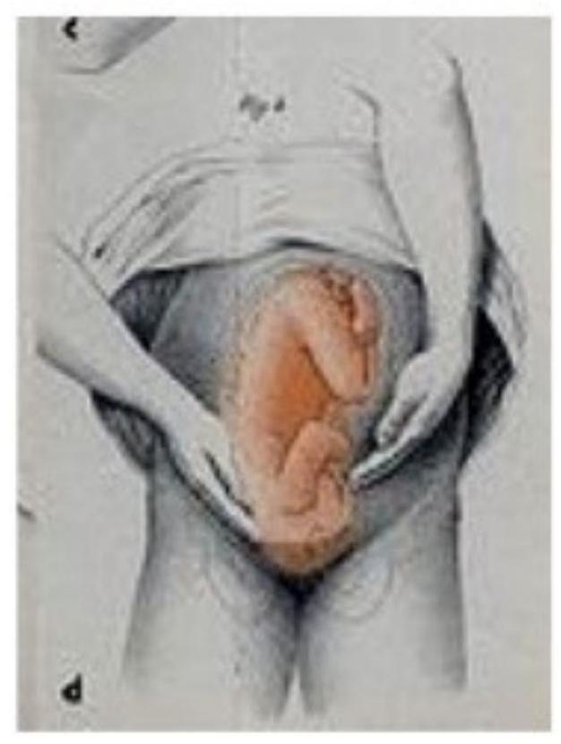

The First Visit
Introduction to the First Visit
The first antenatal visit should take place as early as possible, preferably in the first trimester. It is an opportunity to collect baseline data about the mother, for example, weight, blood pressure and so on. This baseline data is important because it forms a basis for comparison during later visits. Also, during the first visit, any other abnormalities can be detected and treated before they have a detrimental effect.
The activities of the first visit include:
- Registration
- Height and weight measurement
- History taking
- Physical examination
- Laboratory examination
- Management of complaints
- Immunization
- Health Education
a) Obtain Information (History Taking)
Personal History
- Name
- Age (date of birth)
- Physical address and telephone number
- Marital status
- Educational level: primary, secondary, university
- Economic resources: employed? Type of work, position of patient and husband/guardian
- Tobacco use (smoking or chewing habit) or use of other harmful substances?
History of Present Pregnancy
- Date of last menstrual period (LMP); certainty of dates (by regularity, accuracy of recall and other relevant information including contraceptive history).
- Determine the expected date of delivery (EDD) based on LMP and all other relevant information.
- Use 280-day rule (LMP + 280 days). Some women will refer to the date of the first missed period when asked about LMP, which may lead to miscalculation of term by four weeks.
- You may also calculate and record the Expected Date of Delivery (EDD) by adding seven days to the first day of the last normal menstrual period and subtracting three months from that month. For example, if her last period started on 18th June, 18 plus 7 gives you 25. Then June minus three months, (6-3) will give March. So the EDD is March 25th of the following year.
- Quickening if applicable
- Any unexpected event (pain, vaginal bleeding, other: specify)
- Malaria attacks
- Habits: smoking/chewing tobacco, alcohol, drugs (frequency and quantity)
Obstetric History
- Number of previous pregnancies (Gravida and Parity)
- Date (month, year) and outcome of each event (live birth, stillbirth, neonatal death, abortion, ectopic, hydatidiform mole)
- Specify (validate) preterm births
- Specify type and gestation of any abortion, and management if possible (MVA, D&C)
- Birth weight of previous pregnancies (if known)
- Sex of the baby / babies
- Puerperium (eventful or uneventful)
- Periods of exclusive breast-feeding: when? For how long?
Special Maternal Complications in Previous Pregnancies
- Recurrent early abortion
- Induced abortion and any associated complications
- Thrombosis, Embolus
- Hypertension, Pre-eclampsia Or Eclampsia
- Placental Abruption
- Placenta Praevia
- Breech Or Transverse Presentation
- Obstructed Labour, including Dystocia
- Third-degree tears
- Third Stage excessive bleeding
- Puerperal Sepsis
- Gestational Diabetes.
Obstetrical Operations
- Caesarean section (indication, if known)
- Forceps or vacuum extraction
- Manual removal of the placenta
- Destructive procedures (craniotomy, decapitation)
Special Perinatal (Foetal, Newborn) Complications in Previous Pregnancies
- twins or higher order multiples
- low birth weight: <2500 g
- intrauterine growth restriction (if validated)
- Rhesus-antibody affection (hydrops)
- malformed or chromosomally abnormal child
- macrosomic (>4500 g) newborn
- resuscitation or other treatment of newborn
- perinatal, neonatal or infant death (also: later death)
Medical History
- Specific diseases and conditions: tuberculosis, heart disease, chronic renal disease, epilepsy, diabetes mellitus
- RTIs
- HIV status, if known
- Other specific conditions depending on prevalence in the region, e.g. hepatitis, malaria, sickle cell trait
- Operations other than caesarean section
- Blood transfusions
- Rhesus D negative antibodies
- Current use of medicines: specify
- Period of infertility: when? duration, cause(s)
- Any other diseases, past or chronic; allergy
b) Perform Physical Examination
A thorough examination is made at the first visit. This is divided into a general examination and an obstetric examination.
General Examination
- General appearance: namely the nutritional status, whether weak or sick looking. Note the gait and if she walks with a limp.
- Height: noting that any woman below 150 cms in height is likely to have cephalopelvic disproportion.
- Weight: a pregnant woman on average gains 2 kg every month. The total weight gain by the end of pregnancy is about 10-20 kg. Excessive weight gain indicates accumulation of fluid in the tissues (oedema). Lack of increase in weight or loss may mean malnutrition. Obesity may lead to an increased risk of gestational diabetes.
- Blood pressure: which is taken in order to ascertain the normal and provide a baseline for comparison. A pressure of 140/90 mm/Hg at booking is indicative of hypertension and could cause damage to the placenta.
- Pulse, temperature
- Signs of anaemia: in conjunctiva, hands and tongue pale complexion, fingernails, conjunctiva, oral mucosa, tip of tongue and shortness of breath
- Check for oedema of face, hands and ankles
- Observe type of breathing and chest generally for abnormalities
- FGM status: - If type III discuss the possibility of deinfibulation (opening up either antenatal or during labour)
- Varicosities, warts, discharge
Breast Examination
- Palpate gently with the flat of the hand to feel for any lumps.
- Check if the nipple is protractile.
- Educate the woman on how to examine the breasts by herself
Obstetric Examination (Abdominal)
An obstetric examination aims at:
- Observing for signs of pregnancy
- Assessing foetal size and growth
- Assessing foetal health
- Diagnosing the location of foetal parts
- Detecting any deviation from normal
The client is asked to empty her bladder and then to lie on her back on a couch with the arms by her sides.
- Inspect the abdomen for the shape, size, scars and foetal movements. Any abnormality detected is referred for further investigations.
- Estimate the height of the fundus and compare it with the weeks of amenorrhoea. This helps you to assess foetal growth and detect any deviations from the normal.
- Check for varicosities at the back of the leg. Ask the woman to remove any tight clothing at the leg. At this time it is also important to check for phlebitis by looking for any reddened areas.
- Palpate the sides of the abdomen to locate the foetal back in order to determine the position. You do this by facing the patient and then supporting the uterus with your right hand. Keep pushing the foetus with your left hand towards the right. Reverse the order to feel the left side of the uterus.
- Palpate the lower pole of the uterus, just above the pelvic brim. Ask the mother to bend her knees slightly in order to relax the abdominal muscles and ask her to breath steadily with her mouth open.
- Facing the foot of the bed, mark the brim of the pelvis with your hands and cup what presents between them. If the head is presenting, a smooth surface will be felt.
- If you do not find the head in the pelvic brim or at the fundus, suspect a transverse lie. This will be significant only after the 36th week of gestation.
- The foetal heart sounds are listened to last, so as to assess the foetal wellbeing. The Pinard's foetal stethoscope is commonly used to hear the foetal heart.
As you perform the physical examination, talk to the mother and check her facial reaction as you palpate the abdomen. When you complete the procedure reassure the mother.
Findings of Abdominal Examinations
All these are recorded upon completion of the exercise and they include:
- Gestational age: which is estimated as per the size of the fundus - fundal height.
- Lie: which refers to the relationship between the long axis of the foetus and that of the mother and can either be longitudinal, transverse or oblique.
- Attitude: which refers to the relationship of the foetal head and limbs to its trunk. It is most commonly flexion.
- Presentation: which means the foetal part that is lying at the pelvic brim or in the lower pole of the uterus and can either be vertex, breach, face, shoulder or brow. The most common is the vertex. Note that vertex/brow/face all refer to head presentation.
- Denominator: is the name given to the presenting part for example, occiput for vertex, sacrum for breech and mentum for face.
- Position: which refers to the relationship between the denominator of the presentation and the landmarks of the pelvic brim.
Leopold Maneuvers
2nd (lateral) maneuver
3rd (Pawlick's) maneuver
4th - pelvic grip maneuver
Fourth Leopold maneuver.
The area above the symphysis pubis is palpated to locate the fetal presenting part and thus determine how far the fetus has descended and whether the fetus is engaged.
If hands are converging indicates un engagement ; diverging indicates engagement of head.